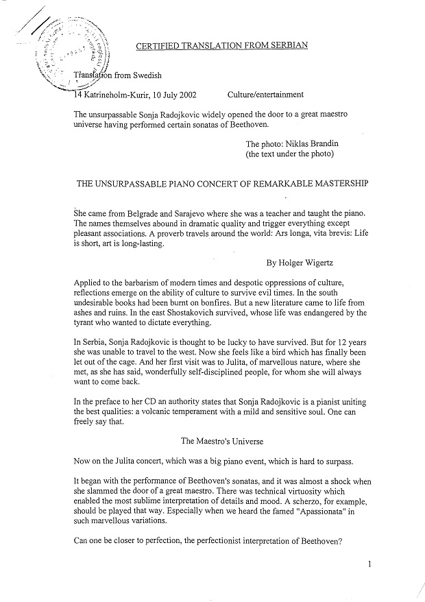
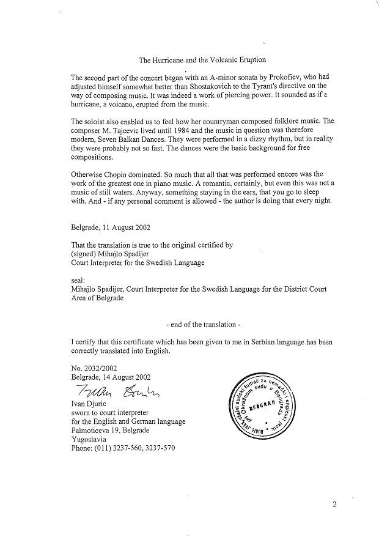
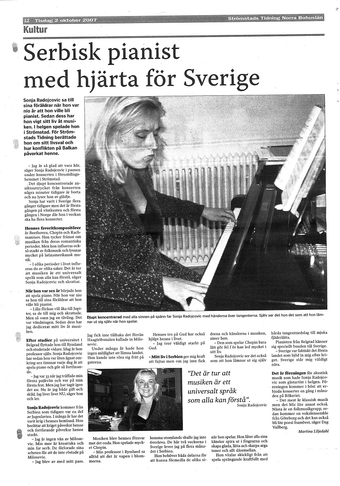

Sonja Radojkovic is a concert pianist and professor at music conservatories in Belgrade,
Sarajevo, and East Sarajevo.She was also huest professot at Universities around the world
as Singapore’s Yong Siew Toh Conservatory of Music, Canada’s University of Manitoba
Winnipeg, New Zealand’s music schools in Dunedin and University of Wellington
Conservatory of Music, and France’s Conservatoire de Caen Musique.
Sonja has a very intensive and ongoing concert career. She plays concerts around the
world every year. Some concert reviews are attached. She also played at Oslo Opera
house the year it opened. She recorded seven CD-s: one of these for our most important
recording studio PGP RTS, some for the Greek Union of Composers, others in New
Zealand.
Sonja also played works of some Scandinavian composers, and I like Norwegian
contemporary music very much.She had two concert tours with music of Egil Hovland.
Her education,Sonja finished at Moskow “Tchsikovsky Conservatory”where she finished
her Master degree.
Sonja has music festival in Croatia at island Hvar.
She speaks english,french and russian and understands italian and spanish.At the
moment,she is learning german.
|  |  |
|
|
|
 |
 |